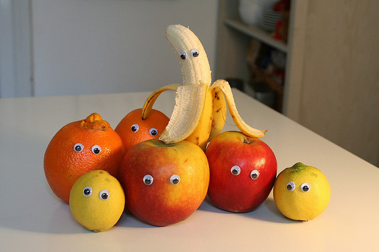

O SITE DAS FRUTAS PREFERIDAS DA LUIZA
MENU
Página 2
Página 3
Página 4
Página 5
Página 6
Página 7
Página 8
Página 9
CONTATO
Oi! Sou a Luiza e hoje vou contar sobre minhas frutas favoritas.
Seu navegador nao suporta esse tipo de midia

eu e minha familia quando eu era apenas uma pequena fruta
Nao clique neste link.Ele esta aqui por acidente.Ignore.